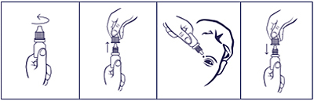

|
 |
| ТИМОЛОЛ-СОЛОФАРМ (TIMOLOL-SOLOPHARM) timolol капли глазные | ||||||||
|
Клинико-фармакологическая группа: Противоглаукомный препарат - бета-адреноблокатор Номер и дата регистрации: ЛП-003087 от 13.07.15 Код ATX: S01ED01 |
Владелец регистрационного удостоверения: зарегистрировано и произведено Представительство: | |||||||
Форма выпуска, состав и упаковка Капли глазные бесцветные, прозрачные или со слегка коричневатым оттенком.
Вспомогательные вещества: бензалкония хлорид - 0.1 мг, натрия дигидрофосфата дигидрат - 6.1 мг, натрия гидрофосфата дигидрат - 15.16 мг, вода д/и - до 1 мл. 5 мл - флаконы из полиэтилена низкой плотности (1) с капельницей - пачки картонные. | ||||||||
| ||||||||
Описание препарата основано на официально утвержденной инструкции по применению и утверждено компанией-производителем для издания 2022 г. | ||||||||
Фармакологическое действие |
Фармакокинетика |
Показания |
Режим дозирования |
Побочное действие |
Противопоказания |
Беременность и лактация |
Особые указания |
Передозировка |
Лекарственное взаимодействие |
Условия хранения и сроки годности |
Условия реализации
Фармакологическое действие
Неселективный блокатор β-адренорецепторов без симпатомиметической активности. Не обладает значимой внутренней симпатомиметической, прямо угнетающей миокард и местной анестезирующей (мембраностабилизирующей) активностью. Блокада β-адренорецепторов в бронхах и бронхиолах повышает сопротивляемость дыхательных путей, обусловленную отсутствием антагонизма к парасимпатомиметической активности. Такой эффект у пациентов с бронхиальной астмой или иными бронхоспастическими состояниями может представлять потенциальную опасность. Блокада β-адренорецепторов снижает сердечный выброс как у здоровых лиц, так и пациентов с заболеваниями сердца. У пациентов с тяжелым нарушением функции миокарда блокада β-адренорецепторов может ослаблять стимулирующее влияние симпатической нервной системы, необходимое для поддержания адекватной функции сердца. При местном применении в виде глазных капель снижает как нормальное, так и повышенное внутриглазное давление за счет уменьшения образования внутриглазной жидкости. Повышенное внутриглазное давление является основным фактором риска в патогенезе развития характерных для глаукомы поражения зрительного нерва и сужения границ полей зрения. Не оказывает влияния на ширину зрачка и аккомодацию. Точный механизм снижения внутриглазного давления, обусловленного тимололом, не известен. Согласно данным тонографии и флуорометрии у человека, тимолол при местном применении понижает внутриглазное давление за счет уменьшения образования водянистой влаги и небольшого увеличения ее оттока. Снижая внутриглазное давление, не влияет на аккомодацию и размер зрачка, поэтому не происходит ухудшения остроты зрения; не снижает качество ночного зрения. Действие проявляется через 20 мин после закапывания. Максимальный эффект наблюдается через 1-2 ч. Продолжительность действия - 24 ч. Фармакокинетика
Всасывание Тимолол быстро проникает через роговицу в ткани глаза. После инстилляции во влаге передней камеры глаза Cmax в плазме крови достигается через 1-2 ч. В незначительном количестве попадает в системный кровоток путем абсорбции через конъюнктиву, слизистые оболочки носа и слезного тракта. Cmax тимолола в плазме крови составляет около 0.824 нг/мл и сохраняется до порога обнаружения в течение 12 ч. У новорожденных и маленьких детей Cmax тимолола существенно превышает Cmax в плазме крови взрослых. Метаболизм и выведение Метаболизм тимолола осуществляется изоферментом CYP2D6. Т1/2 тимолола составляет 4.8 ч после местного применения. Тимолол и образующиеся метаболиты в основном выводятся с мочой. Показания
Режим дозирования
Препарат применяют местно. В начале лечения назначают по 1-2 капли в пораженный глаз 2 раза/сут. Если внутриглазное давление при регулярном применении нормализуется, следует снизить дозу до 1 капли 1 раз/сут утром. Дозы, превышающие 1 каплю 0.5% раствора тимолола 2 раза/сут, не приводят к дополнительному снижению внутриглазного давления. Если при применении тимолола не удается достигнуть необходимого уровня внутриглазного давления, необходимо рассмотреть вопрос о применении дополнительных гипотензивных препаратов. Одновременное применение двух бета-адреноблокаторов для местного применения невозможно. У пациентов со значительно пигментированной радужной оболочкой, может отмечаться менее выраженное снижение внутриглазного давления, а также более длительный период достижения компенсации внутриглазного давления. После прекращения лечения гипотензивный эффект тимолола может сохраняться в течение нескольких дней, а в случае длительного предшествующего лечения остаточный гипотензивный эффект может сохраняться от 2 до 4 недель. При проведении терапии тимоловом только в отношении одного глаза может отмечаться гипотензивный эффект и в отношении контралатерального глаза. Контроль эффективности препарата рекомендуется проводить примерно через 3-4 недели после начала терапии (не ранее чем через 1-2 недели). При длительном применении тимолола возможно ослабление эффекта. Переход с другой гипотензивной терапии При переходе с терапии одним бета-адреноблокатором на терапию другим препаратом из группы бета-адреноблокаторов рекомендуется завершить полный день терапии ранее применявшимся гипотензивным средством, на следующий день начать инстилляции тимолола 0.25% в пораженный(ые) глаз(а) по 1 капле 2 раза/сут. При отсутствии адекватного ответа на терапию доза может быть увеличена до 1 капли 0.5% раствора тимолола в пораженный(ые) глаз(а) 2 раза/сут. При переходе на терапию гипотензивным препаратом из другой группы, кроме бета-адреноблокаторов, продолжают инстилляции ранее назначенного препарата с добавлением инстилляций 1 капли 0.25% раствора тимолола в пораженный(ые) глаз(а) 2 раза/сут. На следующий день отменяют ранее применяемое лечение и продолжают терапию тимололом. Применение в педиатрической популяции Согласно ограниченным данным, тимолол может быть рекомендован для снижения внутриглазного давления при инфантильной и ювенильной врожденной глаукоме в предоперационном периоде или в случае неэффективности проведенного хирургического лечения. Перед применением препарата необходимо тщательно оценить риски и преимущества применения тимолола в педиатрической популяции путем тщательного сбора анамнеза в отношении системных нарушений. В случае, если польза перевешивает риск, рекомендуется применять тимолол в максимально низкой доступной концентрации по 1 капле 1 раз/сут. При недостаточном контроле внутриглазного давления необходимо перейти на применение 2 раза/сут по 1 капле с интервалом между инстилляциями 12 ч. Необходим контроль местных и системных побочных явлений в течение 1-2 ч после первой инстилляции, особенно у новорожденных и детей в возрасте до 3 лет, в связи с возможностью развития апноэ и дыхания по типу Чейна-Стокса. Необходимо предупредить родителей ребенка, получающего лечение тимололом, что препарат необходимо отменить в случае развития у ребенка побочных явлений со стороны дыхательной системы, в частности кашля и чихания. Лечение тимололом проводится, как правило, в течение продолжительного времени. Перерыв в лечении или изменение дозы препарата осуществляются только по предписанию лечащего врача. Порядок работы с флаконом  1. Вращающими движениями против часовой стрелки открыть флакон и снять колпачок. 2. Осторожно, не касаясь пальцами наконечника флакона, перевернуть флакон, зафиксировать между большим и указательным пальцами одной руки. 3. Запрокинуть голову назад, расположить наконечник флакона над глазом и указательным пальцем другой руки оттянуть нижнее веко вниз. Слегка надавить на флакон и закапать необходимое количество препарата в конъюнктивальный мешок глаза. Необходимо избегать контактов наконечника открытого флакона с поверхностью глаза и руками. 4. После использования надеть колпачок на флакон и закрыть вращающими движениями по часовой стрелке. После вскрытия флакона препарат можно использовать в течение 1 месяца. По истечении этого срока препарат следует выбросить. При видимых повреждениях флакона применять препарат не следует. Побочное действие
Нежелательные реакции, возникшие после приема внутрь тимолола и других бета-адреноблокаторов, могут расцениваться как потенциальные побочные реакции и для препаратов тимолола в лекарственной форме капли глазные. Нежелательные реакции, сведения о которых были получены в ходе клинических исследований и при постмаркетинговом наблюдении лекарственных препаратов тимолола в лекарственной форме капли глазные Частота побочных эффектов, выявленных как в ходе исследований, так и при постмаркетинговом наблюдении, оценивались следующим образом: очень часто (≥1/10); часто (≥1/100 до <1/10); иногда (≥1/1000 до <1/100); редко (≥1/10000 до <1/1000); очень редко (<1/10000), частота неизвестна (имеющиеся данные не могут быть оценены). Общие реакции: частота неизвестна - головная боль, астения/усталость, боль в груди. Со стороны органа зрения: часто - затуманивание зрения, боль в глазах, жжение и зуд в глазах, дискомфорт в глазу, конъюнктивальная инъекция; нечасто - блефарит, точечный кератит, кератит, конъюнктивит, ирит, диплопия, эрозия роговицы, язва роговицы, слезотечение или уменьшение слезоотделения, светобоязнь, ощущение "песка" в глазах, отек век, отек конъюнктивы, птоз; редко - увеит, двоение в глазах, пигментация роговицы, эритема век; очень редко - развитие кальцификации роговицы при значительном ее повреждении в связи с наличием фосфатов в составе капель; частота неизвестна - снижение чувствительности роговицы, отслойка сосудистой оболочки в послеоперационном периоде антиглаукоматозной хирургии. Со стороны органа слуха: частота неизвестна - звон в ушах. Со стороны сердечно-сосудистой системы: нечасто - брадикардия, артериальная гипотензия; редко - инфаркт миокарда, снижение или повышение АД, перемежающаяся хромота; частота неизвестна - остановка сердца, AV-блокада, аритмия, учащенное сердцебиение, застойная сердечная недостаточность, феномен Рейно. Со стороны пищеварительной системы: нечасто - дисгевзия; редко - диспепсия, сухость слизистой оболочки полости рта, боли в животе; частота неизвестна - тошнота, рвота, диарея. Со стороны иммунной системы: частота неизвестна - системная красная волчанка. Психические расстройства: редко - депрессия; частота неизвестна - бессонница, потеря памяти, кошмарные сновидения. Со стороны нервной системы: нечасто - головная боль; редко - ишемия головного мозга, головокружение, мигрень; частота неизвестна - нарушение мозгового кровообращения, обморок, парестезии, головокружение, усугубление течения myasthenia gravis. Со стороны кожи и подкожных тканей: редко - отек лица, эритема; частота неизвестна - псориаз или ухудшение течения псориаза, локализованная сыпь, алопеция. Со стороны костно-мышечной системы: частота неизвестна - артропатия, боль в мышцах. Аллергические реакции: частота неизвестна - системные аллергические реакции, включая анафилаксию, ангионевротический отек, крапивницу, местную или генерализованную сыпь, зуд. Со стороны дыхательной системы: нечасто - дыхательная недостаточность, одышка, бронхит; редко - бронхоспазм (преимущественно у пациентов с уже имеющимися бронхоспастическими состояниями), кашель, заложенность носа, инфекции верхних дыхательных путей. Со стороны эндокринной системы: частота неизвестна - субклиническое течение гипогликемии у пациентов с сахарным диабетом (см. раздел "Особые указания"). Со стороны мочеполовой системы: частота неизвестна - ретроперитонеальный фиброз, сексуальная дисфункция (включая импотенцию), снижение либидо, болезнь Пейрони. Нежелательные реакции, возникавшие после приема тимолола или других бета-адреноблокаторов внутрь Аллергические реакции: эритематозная сыпь, лихорадка, сопровождающаяся болью в горле, ларингоспазм, сопровождающийся дистресс-синдромом. Общие реакции и реакции в месте введения: боль в конечностях, снижение толерантности к физической нагрузке, снижение массы тела. Со стороны сердечно-сосудистой системы: усугубление артериальной недостаточности, вазодилатация. Со стороны пищеварительной системы: желудочно-кишечная боль, гепатомегалия, рвота, тромбоз мезентериальных артерий, ишемический колит. Со стороны системы кроветворения: нетромбоцитопеническая пурпура, тромбоцитопеническая пурпура, агранулоцитоз. Со стороны эндокринной системы: гипергликемия, гипогликемия. Со стороны кожи и подкожных тканей: зуд, раздражение кожи, повышенная пигментация, потливость. Со стороны костно-мышечной системы: артралгия. Со стороны нервной системы/психические нарушения: вертиго, снижение концентрации внимания, обратимое угнетение ментальных функций, прогрессирующее до кататонии, острый обратимый синдром, характеризующийся нарушением ориентации во времени и пространстве, эмоциональной лабильностью, некоторым затруднением восприятия и сниженной способностью выполнять нейропсихические тесты. Со стороны дыхательной системы: хрипы, бронхиальная обструкция. Со стороны мочевыделительной системы: затруднение мочеиспускания. Противопоказания
С осторожностью: цереброваскулярная недостаточность, артериальная гипотензия, сахарный диабет, гипогликемия, легочная недостаточность, тиреотоксикоз, миастения, синоатриальная блокада, нарушение периферического кровообращения (в т.ч. синдром Рейно), беременность, одновременное назначение других бета-адреноблокаторов. Применение при беременности и кормлении грудью
При беременности препарат применяют с осторожностью и только в том случае, когда ожидаемый терапевтический эффект для матери превышает потенциальный риск для плода или ребенка. При необходимости применения препарата в период лактации грудное вскармливание следует прекратить. Особые указания
В послеоперационном периоде антиглаукоматозных операций и при применении препаратов, снижающих секрецию внутриглазной жидкости, возможно развитие отслойки сосудистой оболочки глаза. Применение тимолола пациентами с атопией или тяжелыми патологическими реакциями на различные аллергены в анамнезе может спровоцировать более тяжелые реакции в ответ на случайное, диагностическое или терапевтическое ведение аллергенов. Такие пациенты могут слабо реагировать на введение обычных доз эпинефрина для купирования анафилактических реакций. Бета-адреноблокаторы способны маскировать ряд клинических симптомов гипертиреоза (в частности тахикардию). Требуется осторожность при применении бета-адреноблокаторов у пациентов с возможностью развития тиреотоксикоза. У пациентов без сердечной недостаточности в анамнезе длительное угнетение миокарда в некоторых случаях может приводить к развитию сердечной недостаточности. При возникновении первых признаков сердечной недостаточности тимолол необходимо отменить. Необходима осторожность при назначении тимолола пациентам с AV-блокадой I степени, стенокардией Принцметала и периферическими нарушениями кровообращения (феномен Рейно). Основным патогенетическим аспектом лечения закрытоугольной глаукомы является необходимость открытия угла передней камеры, что достигается путем сужения зрачка с помощью миотиков. В связи с отсутствием влияния тимолола на диаметр зрачка в терапии закрытоугольной глаукомы препарат может применяться только в сочетании с миотиками. Из-за возможного влияния блокаторов β-адренорецепторов на АД и ЧСС эти средства следует с осторожностью применять у пациентов с недостаточностью мозгового кровообращения. Если после начала терапии тимололом развиваются признаки или симптомы снижения мозгового кровообращения, следует пересмотреть необходимость терапии местными бета-адреноблокаторами. Применение тимолола может усиливать мышечную слабость при миастении (например, вызывать усиление диплопии, птоза и общей слабости). У некоторых пациентов с myasthenia gravis и другими миастеническими заболеваниями отмечено повышение мышечной слабости при применении тимолола. При одновременном применении с другими лекарственными средствами необходимо соблюдать интервал между инстилляциями не менее 15 мин. При применении необходимо контролировать функцию слезовыделения, состояние роговой оболочки и оценивать величину полей зрения не реже 1 раза в 6 мес. Препарат содержит консервант бензалкония хлорид, который может вызвать раздражение глаз, абсорбироваться мягкими контактными линзами, вызывая изменение их цвета, и оказывать неблагоприятное воздействие на ткани глаза. Контактные линзы следует вынимать перед применением препарата и при необходимости устанавливать их снова не ранее чем через 15 мин после инстилляции. При длительном применении препарата возможно токсическое влияние консерванта бензалкония хлорида на эпителий роговицы (развитие точечной кератопатии и/или токсической язвенной кератопатии). Отмечены случаи развития бактериального кератита у пациентов, применявших тимолол в контейнерах для многократного дозирования офтальмологических лекарственных препаратов. Эти контейнеры непреднамеренно контаминировались пациентами с сопутствующими заболеваниями роговицы. При переводе пациентов на лечение тимололом может понадобиться коррекция изменений рефракции, вызванных применявшимися ранее миотиками. Препарат, подобно другим бета-адреноблокаторам, может скрыть возможные симптомы гипогликемии в крови у больных сахарным диабетом. В случае предстоящего оперативного вмешательства под общей анестезией необходимо отменить препарат за 48 ч до операции, т.к. тимолол усиливает действие миорелаксантов и общих анестетиков. Влияние на способность к управлению транспортными средствами и механизмами В период лечения необходимо соблюдать осторожность при управлении транспортными средствами и занятии другими потенциально опасными видами деятельности, требующими повышенной концентрации внимания и быстроты психомоторных реакций, в связи с профилем побочных явлений (в частности, со стороны органа зрения и нервной системы). Передозировка
Симптомы Возможно развитие системных эффектов, характерных для бета-адреноблокаторов: головокружение, головная боль, аритмия, брадикардия, бронхоспазм, тошнота и рвота, потеря сознания, гипотензия, одышка, генерализованные судороги, кардиогенный шок, сердечная недостаточность и остановка сердца. Лечение При случайном приеме тимолола внутрь необходимо промывание желудка и прием активированного угля. Показано, что препарат не может быть удален из организма путем гемодиализа. При развитии брадикардии и брадиаритмии (при AV-блокаде II и III степени) рекомендуется в/в введение атропина сульфата в дозе от 0.25 до 2 мг; после частичного купирования брадикардии показано введение изопреналина. При труднокупируемой брадикардии следует рассмотреть вопрос об установке кардиостимулятора. При гипотензии рекомендуется прием симпатомиметиков, таких как допамин, добутамин, норадреналин. При отсутствии эффекта - введение глюкагона. При развитии острой сердечной недостаточности рекомендуется применение препаратов наперстянки и диуретиков, а также кислородотерапия, при неэффективности - в/в введение аминофиллина. Лекарственное взаимодействие
Совместное применение препарата с глазными каплями, содержащими адреналин, может вызвать расширение зрачка. Специфическое действие препарата - снижение внутриглазного давления, которое может усилиться при одновременном применении глазных капель, содержащих эпинефрин и пилокарпин. Два различных бета-адреноблокатора не следует закапывать в один и тот же глаз. Артериальная гипотензия и брадикардия могут усилиться при одновременном применении препарата с антагонистами кальция, резерпином и системными бета-адреноблокаторами. Ингибиторы CYP2D6, такие как хинидин и циметидин, могут увеличить концентрацию тимолола в плазме. Одновременное применение с инсулином или пероральными противодиабетическими средствами может привести к гипогликемии. Тимолол усиливает действие миорелаксантов, поэтому необходима отмена препарата за 48 ч до планируемого хирургического вмешательства под общей анестезией. Эти данные могут относиться и к лекарственным препаратам, которые были применены незадолго до этого. |
||||||||
Вернуться наверх |
||||||||
Copyright © Справочник Видаль «Лекарственные препараты в России», Москва, Россия